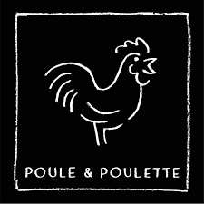

Van Werchter springen we twee weken verder naar Gent. Beide waren we niet zeker dat de tegenpartij aanwezig ging zijn. Contrete afspraken waren niet van de partij. Het was een rare situatie. Ik stapte op de trein om 13h07 in Poperinge. Toen ik je dit liet weten was er stress dat je er niet op tijd ging geraken. Je wist niet dat Poperinge zo ver lag üòÑ.Pas vanaf dat moment wist ik dat onze afspraak ging doorgaan haha, en ik vermoed jij ook. Eenmaal in waregem, bonste m'n hart uit m'n borstkas van de stress. Maar ook toen was je je lieve, zotte, opgewekte en mooie zelf!! Het was een goed begin!
Na afgestapt te hebben op Gent Sint-Pieters kon het beginnen!
M: "Wat gaan we doen? "
U: "Geen idee, ik ben hier nog nooit geweest. 'T is dus aan jou om iets uit je mouw te schudden!"
De toon was direct gezet. Ik wist direct: een vroutwtje met pit!
De dag startte met een wandeling naar en rond de Blaarmeersen. Het wandelen liet ons overtuigen om een Despi te
halen naar Delhaize en deze te consumeren aan de watersportbaan. Het was een topsetting met een prachtig zicht, in het
bijzijn van een prachtig persoon!
Enkel jammer dat wespen ons de baas werden!
Na een sanitaire stop op m'n kot ging ons avontuur verder richting de lekkere vol-au-vent bij Poule & Poulette.
Dit werd gevolgd door enkele drankjes in het sfeervolle café "De Spijker".

Het gesprek in Gent ging 70% over de recapitulatie van Werchter. Wat we hadden meegemaakt, wie we allemaal zagen, hoe moe we waren, hoe zat soms ook, ... Het was leuk om deze terugblik met jou te maken, Uma! Daarnaast leerde ik je ook beter kennen. Ik kwam te weten dat je een positief, lief, zorgzaam en vooral energiek persoon bent! Het stelde me gerust dat "als je geen zin zou hebben, ik het wel zou merken en je er ging onderuit muizen met een smoesje", zoals je zelf vertelde. Dit ludieke gesprek werd gevolgd door een moment van de slappe lach. Vanaf hier wist ik dat het juist zat!